生家
生家は味噌・醤油醸造販売を行っていました。味噌・醤油醸造は、ニオイ等で周囲への気配りも必要だったこともあり、父・総之助と母・マツは、文具屋への転業を決断しました。
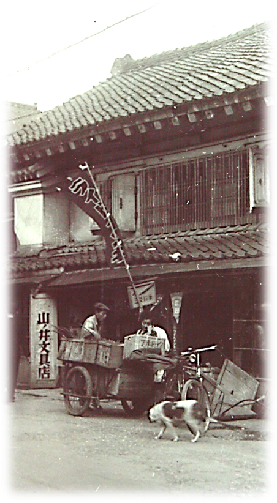
マツと若松屋オヤジさん丸十で飼われていた犬シロ 山ノ井文具店の前にて
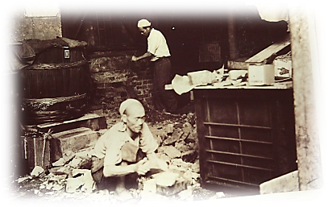
1952年 昭和27.7.12 文具店舗拡張のため味噌工場を取り壊す
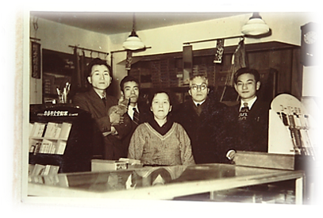
山ノ井文具店内にて 真ん中がマツ
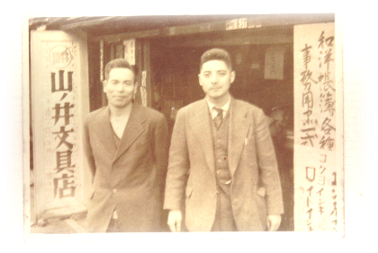
総之助(左)と文具問屋さん
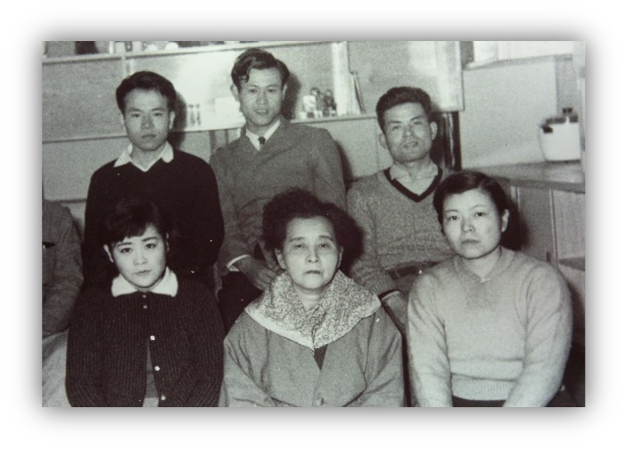
1956年 (昭和31年)土蔵を新館に改装 ・ 恒雄予備校時代
後列左から恒雄, 寛 (四男), 達哉 (三男） 前列左から八重子 (二女), マツ (母), 節子 (長女)
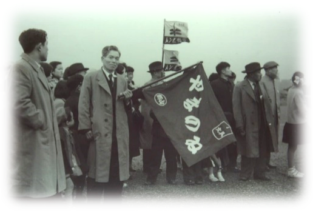
山ノ井文具店は店舗を拡張し、大いに繁盛します。社員も大勢抱え、社員旅行も行っていました。
社員旅行で羽田空港を見学
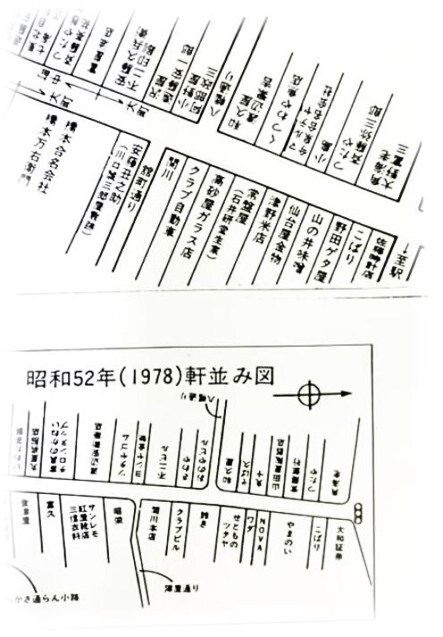
生家のあった通りの軒並み図
1936年 (昭和11年)まだ店舗名が山ノ井味噌となっています。
1977年 (昭和52年)文房具屋となり、店舗も大きくなっていることがわかります。
山ノ井文具店のあった場所
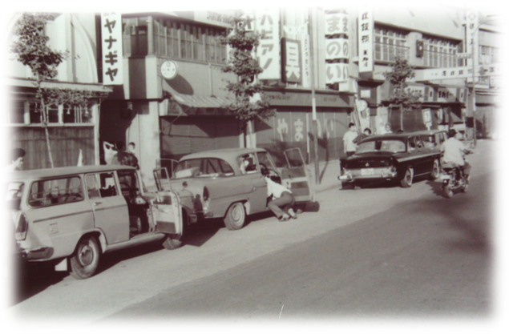昔
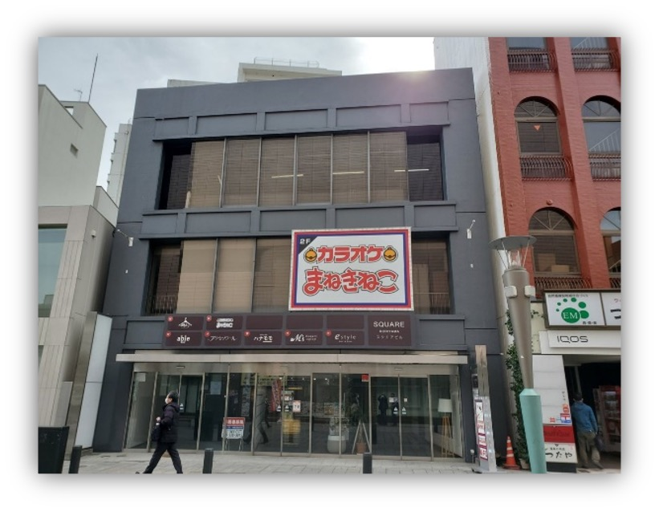現在
山ノ井文具店は、現在郡山に所在する日本大学工学部と関わりがありました。昭和22年（1947年）、東京の神田駿河台から郡山に移転される前より、山ノ井文具店は誘致活動を行っていました。移転後は、日本大学工学部に卸す文房具が山ノ井文具店の売上に大きく貢献しました。現在、同校には孫の竣一が入学し、通っています。
日本大学工学部 昔と現在
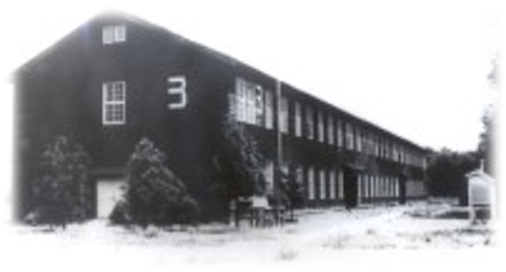日本大学工学部（昔）
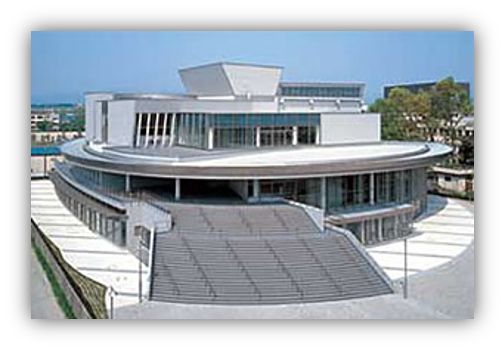日本大学工学部 50周年記念館